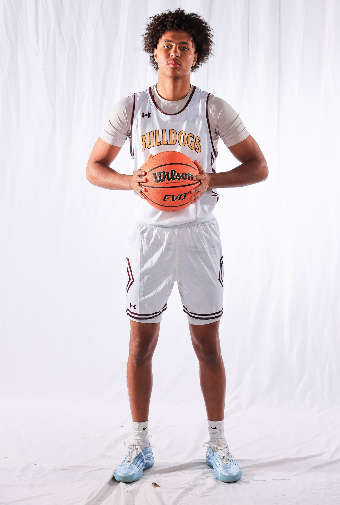
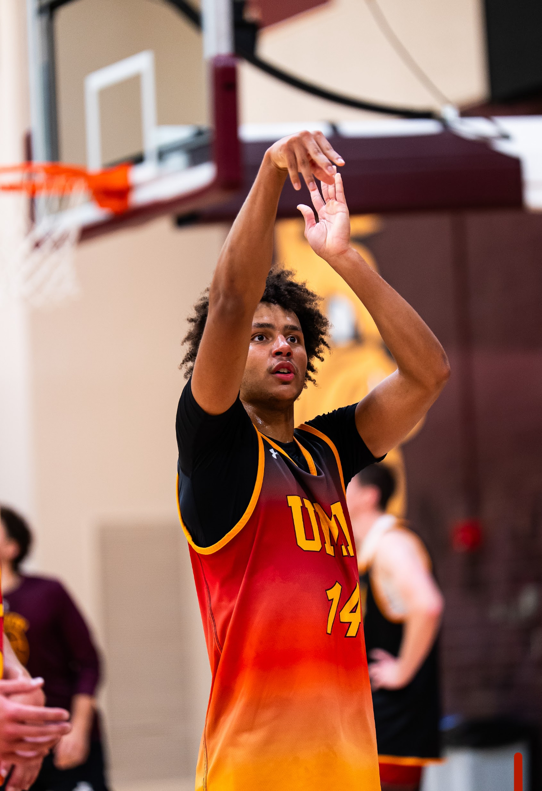
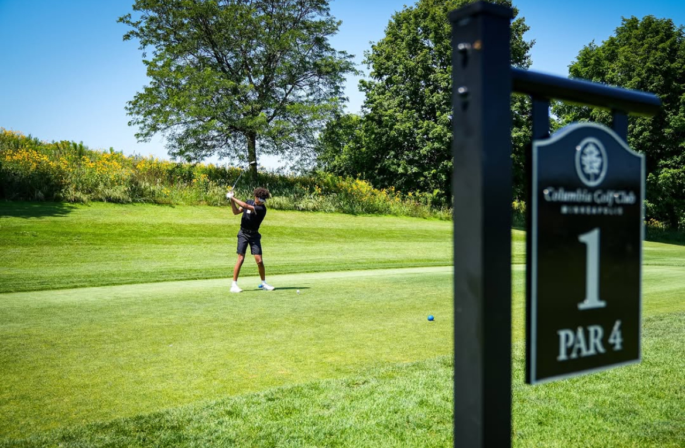
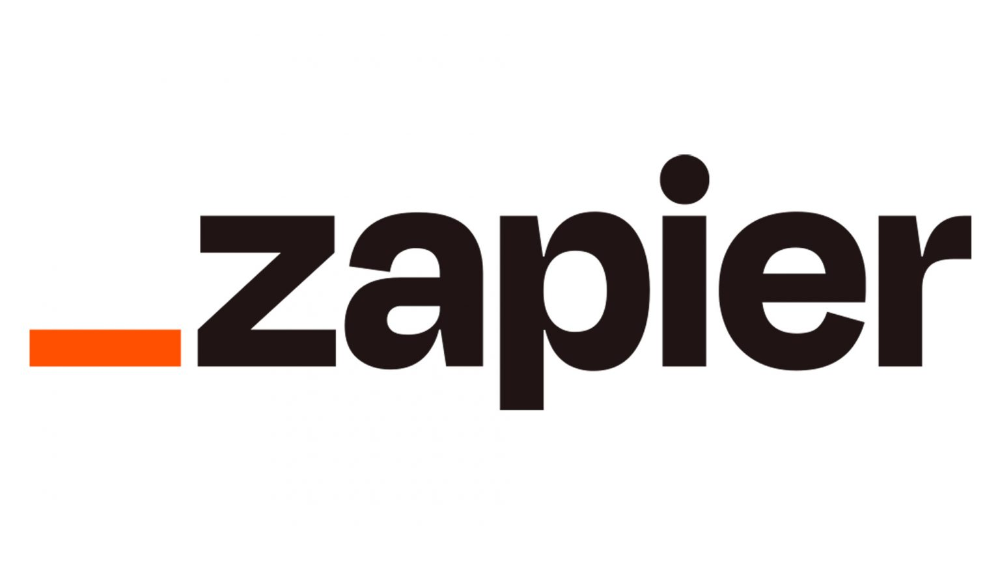
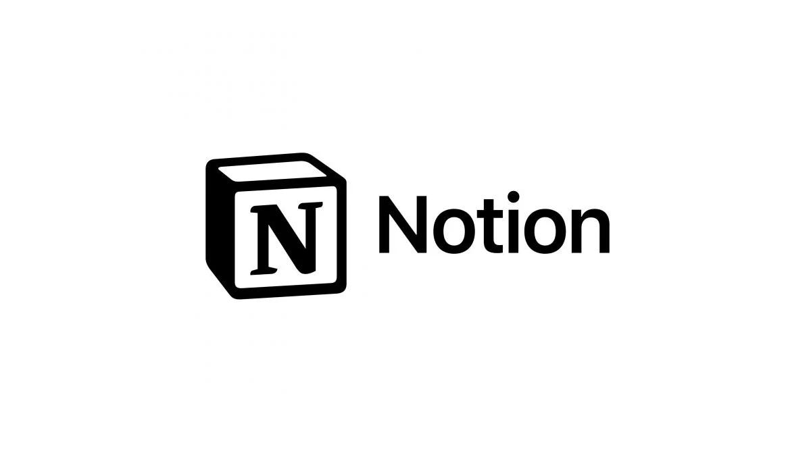

Get to know me better - my passions, interests, and goals


I first got into basketball when I was younger. I remember watching games on TV and being amazed by how fast everything moved, the passing, the shooting, and the energy of the players. It made me want to try it myself. I started by just shooting around outside and playing with friends whenever I had the chance. At first I was not very good, but the more I played, the more I started to enjoy it. Over time it became something I looked forward to doing whenever I had free time.
What I love most about basketball is the competition and the feeling of playing as a team. It is not just about scoring points, it is about working together and pushing each other to get better. Basketball has taught me a lot about patience and practice. There were times when I missed shots or had bad games, but those moments helped me realize that getting better takes time and effort. As I kept playing, I improved my dribbling, shooting, and my understanding of the game.
Basketball has had a big impact on my life. It has helped me stay active and taught me important lessons like teamwork, discipline, and not giving up when things get tough. It is also something that helps me relax and clear my mind. Playing the game has made me more confident and motivated in other parts of my life too. In the future I want to keep improving my skills and continue playing whenever I can. Even if it is just for fun with friends, basketball will always be something I enjoy.

I first got into golf about three years ago. A few of my friends already played, and they invited me to come out to the course with them one day. At first I did not really know what I was doing, and honestly I was not very good. It was harder than I expected to hit the ball consistently, but I still had a good time. The more I played with my friends, the more I started to enjoy it. Even when my shots were not great, it was still fun just being out on the course and spending time together.
What I like most about golf is that it is relaxing but still challenging at the same time. Every round feels different, and there is always something you can try to improve. Even though I am not the best golfer, I have definitely gotten better since I first started. I have learned things like how to be more patient and focus on each shot instead of getting frustrated. Golf has also taught me that improvement takes time and practice.
Golf has become something I look forward to doing whenever I have the chance. It is a great way to hang out with my friends and enjoy being outside. Even if we are not playing our best, we still have a good time competing with each other and joking around. In the future I just want to keep playing and getting a little better over time. I may not be amazing at golf, but it is a hobby I really enjoy and plan to keep doing.
I'm actively pursuing opportunities with innovative organizations where I can apply my skills and grow professionally.

Website: [www.company-website.com]
Location: Remote Headquartered in San Francisco, California
Careers: [www.company-website.com/careers]
I want to work at Zapier because of its focus on automation and helping businesses become more efficient without needing advanced coding skills. Their platform connects thousands of apps, which shows a strong commitment to simplifying workflows and improving productivity. I am also drawn to Zapier’s fully remote work culture, which promotes flexibility, independence, and trust among employees. Additionally, the company’s emphasis on continuous learning and innovation aligns with my desire to grow in the tech field.
I have built a strong foundation in web development through experience with HTML, CSS, and JavaScript, along with coursework in information systems and database management. I have completed projects that demonstrate my ability to create functional and user-friendly websites, as well as solve technical problems efficiently. My interest in automation and streamlining processes makes me a great fit for Zapier’s mission. I also bring strong communication and time management skills, which are especially important in a remote work environment.

Website: [www.company-website.com]
Location: San Francisco, California
Careers: [www.company-website.com/careers]
I want to work at Notion because of its focus on creating simple yet powerful tools that help individuals and teams stay organized and productive. The platform’s flexibility and user-centered design show a strong commitment to improving how people manage information and collaborate. I am especially interested in how Notion continuously evolves based on user feedback, which reflects a culture of innovation and adaptability. Additionally, the company’s emphasis on creativity and thoughtful design aligns with my personal and professional values.
I have developed strong skills in web development, including HTML, CSS, and JavaScript, along with knowledge of databases and information systems from my coursework. I have worked on projects that required both technical problem-solving and attention to user experience, which aligns well with Notion’s product design approach. My ability to think critically and adapt to new tools makes me well-suited for a fast-growing company like Notion. I also bring strong communication and teamwork skills, allowing me to collaborate effectively in a dynamic work environment.
I value innovation because it pushes me to think creatively and find better ways to solve problems. I enjoy learning new technologies and applying them to improve efficiency and user experience. This mindset helps me stay adaptable in a constantly changing world.
Integrity guides me to be honest, responsible, and accountable in everything I do. I believe in doing the right thing even when it’s not the easiest option. This value helps me build trust with others and maintain strong personal and professional relationships.
I value collaboration because working with others leads to stronger ideas and better outcomes. I enjoy sharing perspectives, listening to feedback, and contributing to a team’s success. This approach helps create a positive environment where everyone can grow and succeed together.